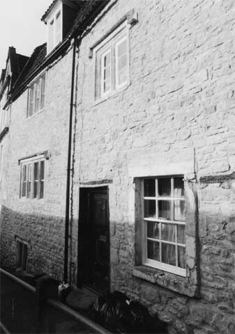

Type of building:
Mid mixed terrace
(nb. The house is one of a pair with its northern neighbour.
They may have been built originally as one house, which, when built, stood alone)
Listing:
Grade ll
Plan and elevation:
Single pile, two units, two-storeys over a cellar and attic with two dormers.
Two rear single unit, single-storey extensions.
Summary of the probable main building
history:
Early 17th Century. Late 18th Century roof reconstruction and other alterations. 20th Century rear extensions

East elevation
Exterior:
Rough coursed small rubble stones with more substantial roughly cut quoins. The
whole was possibly buttered originally or lime rendered. The stone surround of
the ground floor sash window, which is a later insertion, and the later applied
wood linings of the doorjambs project forward of the façade indicating
that past rendering had been of considerable thickness. It is known that the house
was cement rendered as late as 2002, although such coating was most certainly
a 20th Century application. All rendering to the façade has now been removed
to reveal the rubble stone although the rear elevation remains substantially rendered.
There is no discernible external division between the house and its northern neighbour (BE 030B).
The house is built into a north-south slope. The ground also rises sharply to the west at the rear of the house. The north-south slope has allowed the construction of a sub-cellar with an external window yet still permitting a ground floor entry on the rising ground. The cellar window is of two fixed lights with an ovolo moulded mullion and a return drip label. There is a four-light mullion window with a central master mullion at the internal ground floor level. Three of the lights are fixed panes whilst the fourth light is fitted with a small four-over-four sash window. The mullions are of ovolo section with a return drip label over. To the right of this and near the entry there is a now blocked small window opening. The door-case is of ovolo moulded wood with a plain timber lintel and a dressed stone surround. The window to the right of the entry is at a low level relative to the other ground floor window and is a double hung sash of six-over-six panes with a dressed stone surround, a stone sill and evidence of former shutters. This window is a later insertion. Immediately to its right there is the remnant of a timber lintel, shared with the northern neighbouring house, which possibly marks the position of a former window or door.
There are two first floor windows at different heights on the façade, which reflects the internal irregular levels. One is a three-light mullion, the central light is fitted with a small four-over-four sash which is flanked by two fixed lights. The mullions are of ovolo section. The drip label has been removed, presumably when the roof was reconstructed as a mansard. The other, lower level, window is a two-light mullion, of ovolo section, with fixed panes and a return drip label.
The fixed panes of the mullion windows on both the ground and the first floors and of the cellar are internally supported by horizontal iron saddle bars.
The external gable end wall is inset above the ground floor level by about 13cms. The roof is of the gable gambrel style of mansard and houses two hipped dormers fitted with modern wooden casement windows. The verge of the south gable is raised and coped; the coping resting on a kneeler. The gable end stack is of ashlar, topped with extra brick levels. Slates project from the gable end at a high level, presumably to deflect rain water. The roof is tiled. There is another stack on the gable verge visible only from the rear elevation.
Interior:
Cross passage plan although the passage slopes downwards markedly from the rear
to the front entry. Wall thickness through both entries is about 80cms. The passage
is spanned by a chamfered and stopped beam. A long tie beam is visible at ceiling
level running the length of the passage. The entry from the passage to the room
to the left is up two steps and through an oak door case, ovolo moulded and step
stopped. This room is the principal room (the “Hall”) with an axial
or lateral ceiling beam, ovolo moulded with step and run-out stops. The joists
have recently been exposed. There is an oak panelled window seat filling the step-in
four-light mullion window and, on the gable end wall, a large fireplace with chamfered
stone jambs and run-out stops spanned by an arched timber bressumer. The fireplace
alcove is fitted with an 18th Century cupboard with wood pegged joints. The room
houses a newel staircase which reaches to the attic level. The staircase from
ground floor to the attic is screened by moulded wood in-and-out panelling which
is possibly a late 17th Century addition to preserve privacy in the individual
rooms it accesses. At ground floor level the stairs are guarded by a three-plank
door with moulded braces and nailed iron strap hinges although there are signs
that the door has been re-hung.
There is a cellar under the Hall, which is accessed by stone steps from the passage. The steps replace an earlier flight of steep spiral stone steps, the remnants of which are still visible. The ceiling of the cellar is spanned by a chamfered and stopped wooden beam. The floor is stone flagged. Spring water seeps through a channel at the base of the west wall and is captured by two small stone basins built into the floor while excess water escapes to the lower external ground level via a runnel across the cellar floor and through a drain built into the base of the east wall.
The ground floor room to the right of the cross passage is at the same level as the passage. The room is ventilated through an ornate grill in the wall above the entry. There is a worn wooden ceiling beam. The room was substantially modified in the late 18th Century with the insertion of a beaded stone corner fireplace and a sash window and the possible blocking of an exterior window or door opening. The alcove is fitted with an 18th Century cupboard but appears to be a former door giving access to the northern neighbouring house. Similarly, the stack to service the fireplace appears externally at eaves level on the neighbouring house.
On the first floor of the house, the front most southern room has a large fireplace with an arched oak bressumer and a ceiling beam which is chamfered with step and run-out stops. There is a window seat. Wall thickness measured through the window opening is about 62cms. The northern front first floor room is at a lower level. It is entered from a turn in the stairs via a moulded wood door-case. The ceiling beam is of plain wood and spans the width of the building as contrasted to the moulded beams in the rest of the house, which run axially. There is a 14inch wide oak sill to the internal window.
The attic has been modernised but still retains a small rudely fashioned stone fireplace surround fitted with a work-a-day iron grate, which look to be of late 18th Century date. The roof is of purlin, square common rafters and collar construction; the timbers being waney-edge. The ridge piece is laid diagonally, clasped by the rafters and yoked.
Date & development:
Wall thickness and profile, about 80cms at ground floor level thinning to about
62cms at first floor level, and the mouldings to the stone and wood work indicate
a very early 17th Century construction date, probably before 1620 or so.
The different levels within the house were probably deliberately designed. A cellar with an external window could be built by taking advantage of the sloping site but the slope was not sufficient to completely provide for ground floor rooms at the same level without sacrificing head room in the cellar or, for that matter, in the fine room above (the Hall), which seemed to be important considerations. As a result the southern ground floor and first floor rooms are more elevated than their northern counterparts. The function of the cellar and its constant water supply is not known. Equally, the purpose of the sloping passage is not clear.
Substantial alterations were effected in the late 18th Century with the roof reconstructed as a mansard, possibly to provide servants accommodation. It is speculated that this roof replaced a gabled roof .
There are two single storied rear extensions both under pitched roofs. The southern extension of coursed rubble appears to be of mid 20th Century date but incorporates what may have been a small outshot contemporary with the main house accessed direct from the Hall. Certainly, the outshot is shown on the 1840 Tithe Map. From the evidence of the verge chimney stack visible from the rear of the house, this outshot was provided with a fireplace. The function of the outshot is not known but it was possibly was a kitchen or brewhouse. The northern extension of cement block is late 20th Century.
Ownership/occupation:
The spacious and well equipped character of the property would indicate the relatively
prosperity of the original builder-owner, possibly a clothier or merchant It is
suggested that the house and its neighbour (BE 030B) were originally built as
one house - BE 030A with its separate entry may have been the prestigious
“business” end of the property while BE 030B was the more intimate
family end. More likely, although rare in England (Colin Platt p. 178), the property
may have been intended to house two branches of the same well-to-do family with
the house division respecting their individual privacy. Some form of unity of
ownership was still the position in the late 18th Century; both properties were
put under the same mansard roof and a stack wholly on the roof of one house was
built to serve an inserted fireplace in the other house. By 1840 the house had
been clearly divided into two properties although still under common ownership,
Louisa Mannings, and let out to separate tenants.
References:
- 1840 Batheaston Tithe Map and Apportionment Schedule, Somerset Record Office
- Colin Platt “The Great Rebuildings of Tudor and Stuart England”,
UCL Press, 1994
Reference Pictures
|
Oak
ovolo moulded door frame |
Four-light
mullion window with master mullion |
Basement
mullion window |
|
Three
plank door |
First
floor fireplace |
Oak
panelled window seat |
|
Strap
hinge on a three plank moulded door |
Ceiling
beam, ovolo moulded with step and run-out stop |
Ground
floor fireplace |
|
Basement,
spring water catchment basins |
Survey Drawings
|
Ground
Plan |
Cellar
Plan |
Section |
|
Longitudinal
Section |
East
Elevation |